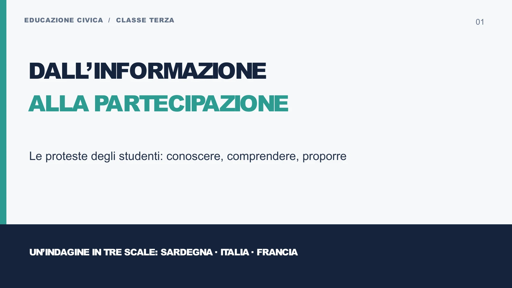
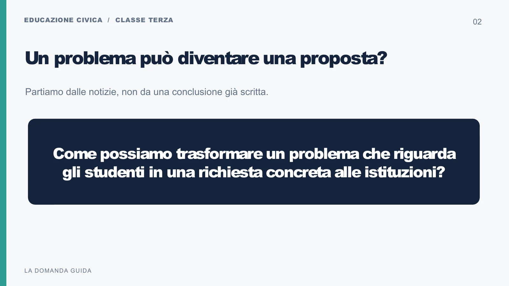
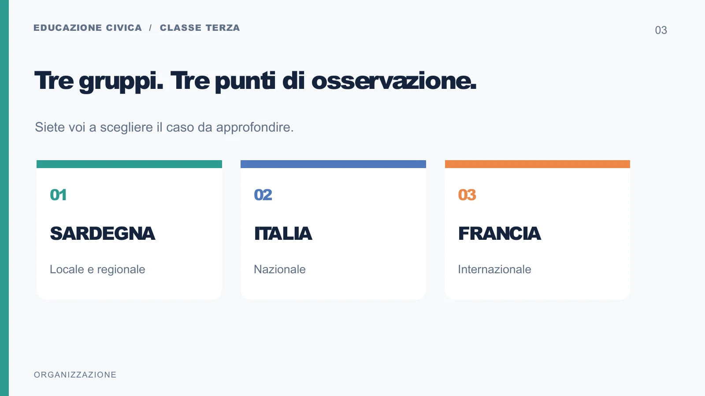
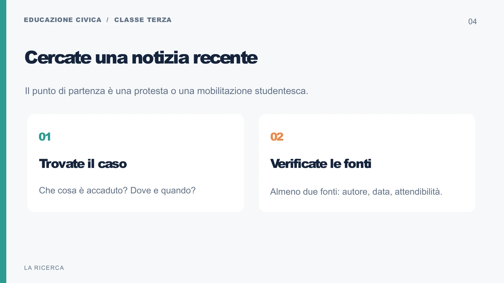
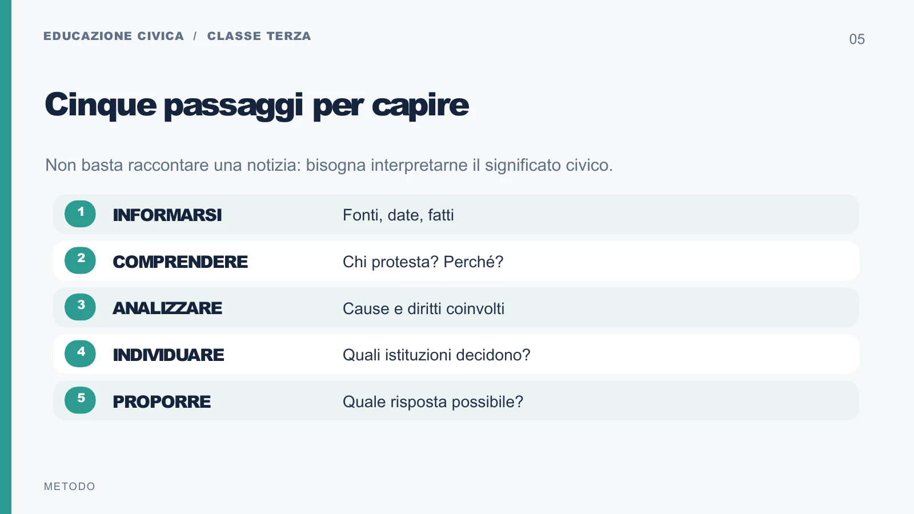
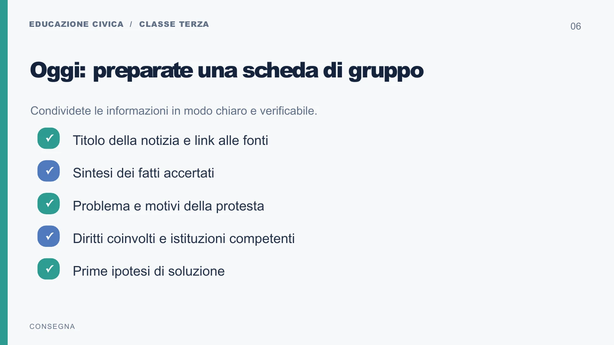
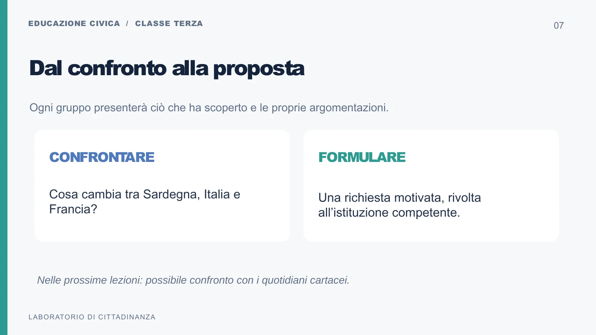
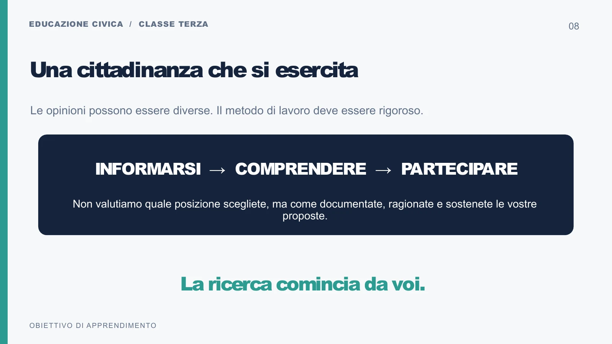

Sardegna
Scala regionale. Una mobilitazione studentesca nel territorio sardo.
Metodologie Operative · IIS Meucci - Mattei | Decimomannu
Educazione civica · Classe terza
Le proteste studentesche: fonti, analisi, proposta.
Indirizzo Servizi per la Sanità e l’Assistenza Sociale
Disciplina: Metodologie Operative
La domanda guida
Come si documenta un problema e lo si presenta all’istituzione competente?
Il punto di partenza
Il percorso parte dalle notizie sulle proteste studentesche discusse in classe. Una protesta rende visibile una richiesta, ma il titolo di un articolo non basta a spiegarla: occorre ricostruire i fatti, distinguerli dalle opinioni e individuare chi può intervenire.
Il caso lo sceglie il gruppo. Il docente assegna la scala geografica e il metodo. Non è richiesta l’adesione a una protesta o a una posizione politica.
Riconoscere un bisogno, documentarlo e motivare una risposta sono passaggi del lavoro dell’operatore sociale nei servizi alla persona.
Organizzazione della classe
Scala regionale. Una mobilitazione studentesca nel territorio sardo.
Scala nazionale. Una mobilitazione studentesca italiana.
Scala internazionale. Un caso francese, controllando parole e istituzioni del sistema francese.
I ruoli nel gruppo sono quattro: ricercatore delle fonti, analista del problema, referente istituzionale, redattore e portavoce. Tutti leggono le fonti e sanno motivare la proposta.
Ora 1
Esito: caso scelto e due fonti.
Ora 2
Esito: scheda di gruppo.
Ora 3
Esito: istituzione competente individuata.
Ora 4
Esito: dossier e richiesta motivata.
La ricerca
Si cercano almeno due fonti sullo stesso caso. Una fonte è attendibile quando sono identificabili autore e data e quando riporta fatti, dati e testimonianze verificabili. Di ogni fonte si annotano titolo, testata, data e collegamento. Due siti che riprendono lo stesso comunicato non sono due conferme indipendenti.
Si ricostruiscono che cosa, dove, quando, chi e perché, in massimo 120 parole. Un fatto è verificabile; un’opinione è un giudizio; una rivendicazione è ciò che qualcuno chiede. Ciò che non si trova nella fonte si indica come «non verificato».
Si individua il problema collettivo: chi ne risente, quali bisogni e diritti sono coinvolti, quali cause sono documentate. La violenza e gli scontri sono fatti distinti dalla protesta e non ne spiegano le ragioni.
Si stabilisce chi ha il potere di decidere: scuola, Città Metropolitana, Regione, Ministero o, per la Francia, l’autorità competente in quel sistema. La competenza si verifica sul sito ufficiale dell’ente.
La proposta indica destinatario, problema, richiesta concreta e motivazione, con i limiti riconosciuti e la risposta a una possibile obiezione.
Il quaderno della ricerca
La scheda raccoglie il lavoro dei cinque passaggi. Ogni studente la salva con il proprio codice; il gruppo concorda un redattore e riporta la versione comune nelle singole copie.
Entra con il tuo codice o come ospite per compilare la scheda. La lettura e i materiali sono sempre disponibili.
0 / 120 parole
Prodotto finale
Il gruppo prepara un dossier, cioè la raccolta ordinata della ricerca (fonti, fatti verificati, problema, istituzione competente), e una richiesta motivata rivolta all’ente individuato. Il lavoro si presenta alla classe in un intervento breve.
L’imprevisto. Una fonte risulta inesatta o superata: si cerca un riscontro, si corregge il dossier e si spiega che cosa cambia.
La richiesta è destinata simbolicamente all’ente: non è previsto un invio reale.
Il confronto delle fonti, la distinzione tra fatti e opinioni, l’individuazione dell’istituzione competente, la plausibilità della proposta e la collaborazione nel gruppo. Non si valuta l’orientamento politico.
Per la classe e per la LIM
Le otto diapositive della ricerca. Si possono sfogliare qui o scaricare in PowerPoint.








Per la verifica
La dispensa raccoglie in una pagina i concetti da studiare: fonti, distinzioni, analisi di una richiesta, rappresentanza studentesca. Il video ripete gli stessi contenuti in tre minuti.
Obiettivi
Gli obiettivi sopra sono formulati per questa attività. La tabella seguente riassume i raccordi con le Linee guida allegate al D.M. 7 settembre 2024, n. 183, secondo ciclo, pp. 17–18 e 21–22. Le formulazioni della tabella sono una parafrasi didattica dei riferimenti nazionali.
| Competenza di Educazione civica | Obiettivo nazionale pertinente | Nel nostro lavoro |
|---|---|---|
| 1 · Costituzione | Riconoscere diritti, doveri, responsabilità e principi costituzionali; partecipare alle forme di rappresentanza della comunità. | Analizzare i diritti implicati dal caso e discutere rispettando persone e opinioni. |
| 2 · Costituzione e istituzioni | Conoscere organizzazione e funzioni delle istituzioni e individuare forme di partecipazione e rappresentanza. | Documentare la competenza dell’interlocutore e formulare una richiesta motivata. |
| 10 · Cittadinanza digitale | Valutare credibilità e affidabilità delle fonti; analizzare criticamente informazioni digitali e distinguere fatti e opinioni. | Confrontare due fonti, citarle e correggere la ricerca dopo una nuova verifica. |
Il Piano triennale dell’offerta formativa (PTOF) 2025–2028 dell’istituto, pp. 87–89, orienta il percorso sociosanitario verso le questioni sociali e prevede discussione, ricerca e produzione di testi anche multimediali: sono raccordi metodologici pertinenti a questa attività.
Nel curricolo SSAS d’istituto consultabile è presente un percorso di prima dedicato alle regole di convivenza e alla rappresentanza. Questo lavoro prosegue l’esercizio della partecipazione attraverso la lettura critica dell’attualità. Il raccordo specifico con il curricolo di Educazione civica e la programmazione della classe terza resta da completare con il consiglio di classe.
La numerazione 1, 2 e 10 delle competenze civiche è distinta dai codici professionali SSAS C1–C10. Nei Programmi di Metodologie Operative questa UDA è qualificata come trasversale: non le vengono attribuiti agganci professionali non documentati.
Nel testo della Costituzione: art. 3 (uguaglianza), art. 17 (riunione), art. 21 (libertà di manifestazione del pensiero), art. 34 (istruzione). L’art. 40 riguarda lo sciopero dei lavoratori e va distinto dalle proteste degli studenti.
Download
Risposte raggruppate per domanda, senza nomi o codici associati. Nei testi da condividere evitate dati personali.